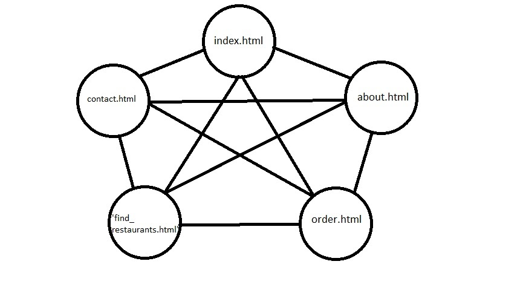
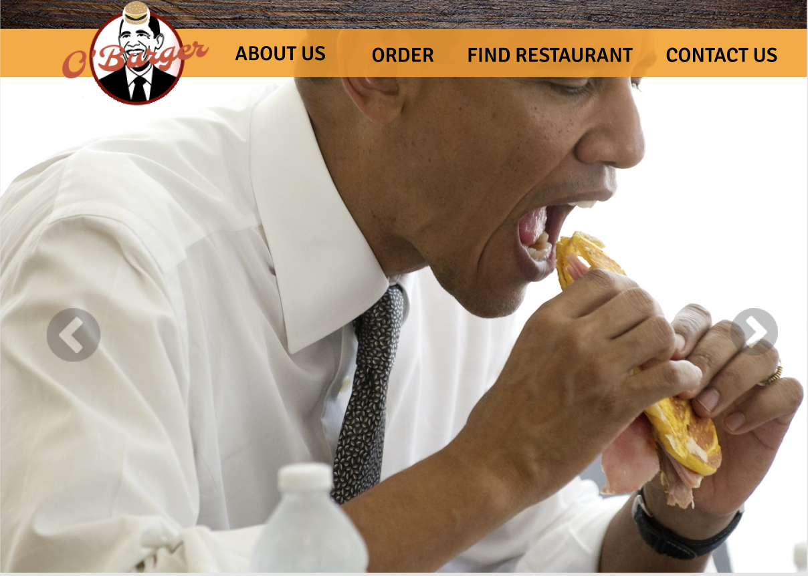
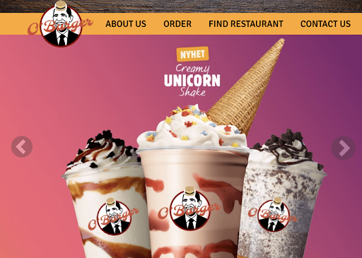
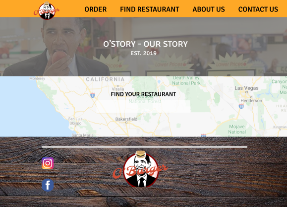
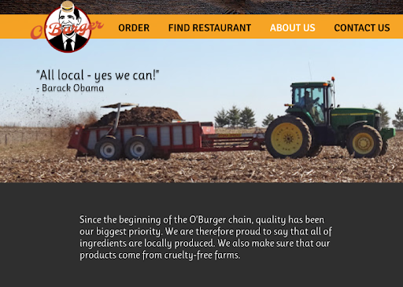
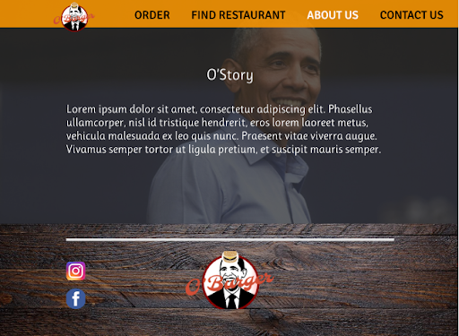
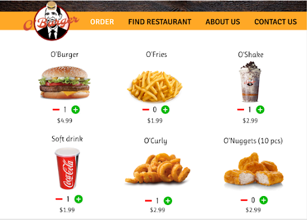
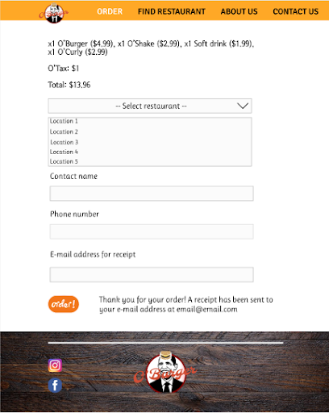
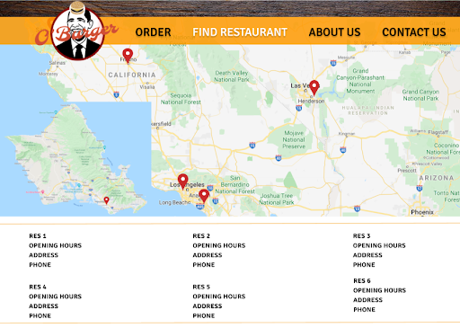
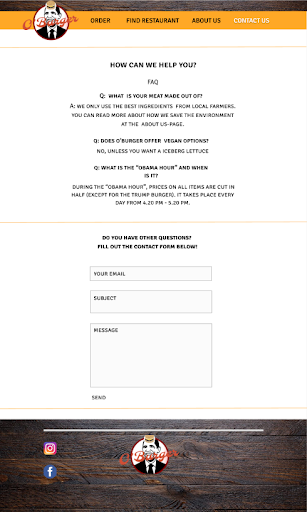

Administrative Details:
Imaginary Client: Barack Obama (44th President of the United States of America)
He is the founder and the current President of O'Burger.
Purpose, Goals and Audience:
The purpose of the website is to serve as a platform for the fast food chain - O’Burger, which will both inform and intrigue our audience about the products, prices, services and other information through it’s appealing and well-structured design, giving them the best possible browsing experience. The site is aimed at anyone who loves a good burger, but especially younger people and students, who are given special discounts. The site is perfect for anyone who would like to order food directly from the website. It will also be aimed towards people who would like to contact us because of complaints or other inquiries.
Navigation Structure:
Our navigation structure will make it possible to access any of our pages regardless of the current sub-page the user is on. Through the navigation bar, the user will be able to navigate through these pages with one click: ‘Homepage’, ‘Order’, ‘Find restaurant’, ‘Contact us’ (see sitemap below). We chose this method because it is the easiest and least time-consuming way of finding the information that you’re looking for on our website.
Page Layout and Appearance:
Universal design:
Fonts:- Signika negative SC (Used for most of the mock-up pics)
-
- Navbar: 36px
- Paragraphs: 36px
- Currently a big difference in font-sizes from page to page, and is therefore not finalized.
- Ruluko (Used for ‘About us’ and ‘Order’ page)
- Fallback fonts, such as ‘Geneva’, ‘Tahoma’ and ‘Sans-Serif’, will of course be provided, to ensure that all users can browse our website even though they do not have the right fonts like
- Text: Black/White, whichever color has the strongest contrast to the background.
- Links: Default black, white font and cursor:pointer on hover. This to clearly indicate to the user that the links are interactable.
- General color scheme of website: Dark orange (#FF9900), gray (#2F2F2F) and white (#FFFFFF).
- Background: White (#FFFFFF). However, we will be using a lot of pictures, which will make up most of the site’s background. The pictures will mostly consist of food (which triggers the user's appetite) or farm fields (which gives the user the impression that O'Burger is ecological, good for the environment or otherwise "close to nature").
- Shadows: The navbar links will have dark shadows to make them more visible and appealing to the user.
- Body width: Max-width: 100%. The paragraphs on the page will have a max-width of 80% of the body.
- Links: The logo in the navigation bar will be a clickable link that will bring the user to the main site. The navbar will also have other clickable links which bring the user to their respective pages.
- Banner: Our banner is right above the navigation bar when scrolled all the way up. We decided to use a picture of dark spruce wood, which is intended to give the site an overall “warm” look. A different version of the dark spruce wood is used for the footer.
- Navbar position: The navigation bar will always stay at the top of each page even when scrolling downwards (except when scrolled all the way to the top, where the navbar is below the banner).
- Footer: The footer can be found at the bottom of each page. Like the banner, we decided to use the same picture of dark spruce wood as the footer’s background. At the footer you will find our logo and links to different social media platforms. By clicking the logo, the user will be sent to the top of the page, which removes the hassle of scrolling back up.
- Logo: An O'Burger logo will be located at the upper left corner of the page on the navbar. The logo will always be attached to the navbar, and will minimize when the user scrolls down. When clicked, this logo returns the user to the homepage.
Content:
- Homepage - index.html
The homepage will be the first page that the users will see when they visit the site. Here we’ll have a navigation bar where you can navigate to different parts of the website with one click. The homepage will include a picture slideshow. The main content of the slideshow on our homepage will be our deals and student discounts. This slideshow is going to capture the user’s attention as soon as he/she enters the page. The slideshow is going to run automatically, but the user can also click through the different deals. We took our mobile users into consideration, and decided to not make their slideshow static, making them able to swipe through the deals on their mobile devices. There will also be a picture that you can click on to read about ‘O’Story’ (about.html). Below the O’Story flair, there will be a picture of a map that the user can click on. This will redirect the user to the ‘Find restaurant’ page (find_restaurants.html).
  
- About Us - about.html
This page will inform the user about O’Burgers food through pictures, slogans and texts. The page will also contain information about the history of O’Burger and the inspiration behind the food, and we will also include relevant pictures.
 
- Order - order.html
This page will contain all of the menu items, and give the user the ability to pick the quantity of the items that they want to order by clicking on a ‘+’/’-’. The site will automatically update what the user is picking, the prices, tax and the total. This will be done with javascript. The user will then fill in a form with their name, phone number and email address. In the end the user will have to click on an ‘order’ button. The page will then give the user feedback about the order. The receipt will be directly below the menu, so that the user doesn't need to scroll far up when deciding to change their order. When the user orders 0 of any item, that item won't show up in the receipt, in order to remove unnecessary text and maintain the best possible user experience.
 
- Find Restaurant - find_restaurant.html
This page displays a map with markers representing all of the restaurants in the U.S.. Further down on the page all the necessary information about every restaurant can be found, such as opening hours, address and phone numbers. Two different designs can be seen below, one with search bar and one with all the restaurants written below a static map.

- Contact Us - contact.html
This page has the purpose of making it possible for the user to contact customer service. So we decided to make a form site where the user can enter her or his e-mail address and send a message directly through the form on the website. This message will reach customer support. Different contact information like phone numbers will be displayed on the website. A FAQ can be found on the top of this page, where the user can read through common questions, and hopefully find the answer to what they’re looking for.

Minimum Requirements:
We decided to fulfill the minimum requirements through these four Javascript applications, which are listed below:
- navbar.js
A navigation bar on top of each webpage. One script will be used to create a navbar for all the pages - making it easy and practical to edit if needed. Aside from the buttons and logo sending the user to different web pages, the navigation bar will also slightly change its position based on how far the user has scrolled down. When at the top of the page, the navbar is slightly scrolled down and the navbar O'Burger logo is slightly bigger. When scrolling down, the navbar is "dragged" down as the user scrolls and the logo shrinks slightly to make up for the lost space at the top of the page.
- slideshow.js
On the homepage, we plan on making a Javascript slideshow. It will automatically scroll through its gallery of pictures containing deals, but the user should also be able to click buttons on the right and left to switch images themselves, should they want to manually look closer at one of the deals. The slideshow script will be a separate javascript file so that it's entirely possible to easily create more slideshows on multiple pages should we choose to do so.
- order.js
The order page is a html page where the user can order take-away food. The page consists of the following parts:
- A matrix of items from the O'Burger menu: Each item has a picture, an item name, "+" and "-" buttons with a “total”-counter, and a price. The counter represents how many of that item will be ordered, and the + and - signs will increase or decrease the amount of that item, respectively.
- A receipt which shows which items will be bought, as well as the amount of those items, their prices and the total sum. The receipt will be updated every time the user changes their order, e.g. adding another burger to their order. This to ensure that the user can double check their order before ordering.
- A button that, when clicked, will notify the user that their order has been placed and that the receipt has been sent to their email address as well.
- contact.js
Contact us will be an html page where the user can send a fictional email to us at O'Burger. The form asks for the user’s email address, the subject, and message. There will be a "send"-button at the very bottom of this page.. They will be notified that the email has been sent (We will code this using Javascript), but no actual email will be sent, as we do not actually intend to start a burger business.
- footer.js
On every page, there will be a footer which contains links to various social media the user may follow us on. There will also be an O'Burger-logo which, when clicked, takes the user to the top of the current page. This to give the user other options than just scrolling to the top of the page. The footer will, similarly to the navigation bar, be created in a javascript file which will be referenced by the html pages. The footer can only be found by scrolling to the bottom of the page, in contrast to the navbar, which is always visible. If the footer always was on-screen, it would take unnecessarily much space from viewing the content of the page. Since the footer is both bigger and less important for the user than the navbar, we choose to move the footer all the way to the bottom of the page.
Plan:
List of folders with files
- index.html
- about.html
- order.html
- find_restaurant.html
- contact.html
- images/
-
- O_Burger.png
- spruce_background.png
- tractor.png
- obama_smile.png
- obama_eating_sandwich.png
- obama_eating2.png
- milkshake.png
- burger.png
- ofries.png
- ocurly.png
- cocacola.png
- facebook.png
- instagram.png
- minus.png
- plus.png
- onuggets.png
- order.png
- googlemaps.png
- ... We are going to find more pictures ...
- scripts
-
- navbar.js
- slideshow.js
- order.js
- contact.js
- footer.js
- style.css
Files that are used for multiple pages, such as CSS and some scripts, have a deadline intentionally earlier than other files, because one change in these modular files may change all other pages drastically and shouldn't be finished last. Index.html is not being prioritized, considering all pages are accessible through the navigation bar. Navbar.js will therefore become our top-priority. We will also need a html page to "house" this script. However, it is not important which html page this is, but one of them should be close to finished by the time navbar.js is.
| Filename: | File Description: | In Charge: | Due Date: |
|---|---|---|---|
| images/ | Collection of all our images. | Everyone | Oct 8, 2020 |
| index.html | The website's homepage. | Kelvin | Oct 20, 2020 |
| about.html | Info about restaurant food and the history of O'Burger. | Ibrahim | Oct 20, 2020 |
| order.html + order.js | Order-page with menu. | Torbjørn | Oct 25, 2020 |
| find_restaurant.html | Overview of all restaurants in the US with additional information. | Marcus | Oct 25, 2020 |
| contact.html + contact.js | Customer Support and FAQ. | Marcus | Oct 25, 2020 |
| navbar.js | Navigation bar. | Everyone | Oct 20, 2020 |
| slideshow.js | Slideshow of deals on the homepage. | Sindri | Oct 20, 2020 |
| footer.js | Contains links to social media and logo for a quick-scroll to the top of the webpage. | Everyone | Oct 20, 2020 |
| common_style.css | Universal design for all webpages. | Everyone | Oct 20, 2020 |